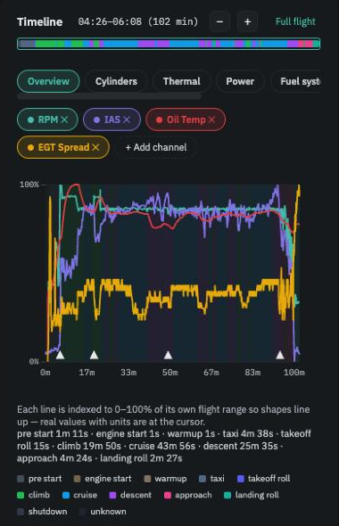

In brief. The app splits every flight into phases — pre-start, engine start, warm-up, taxi, takeoff roll, climb, cruise, descent, approach, landing roll, shutdown — from the RPM, airspeed and altitude in the log, with nothing for you to label. Almost everything else depends on this: cylinder balance is measured in cruise, boost on the takeoff roll, and a reading that is expected to be out of range during the pump test or at shutdown is only known to be expected because the app knows the phase. You see the phases as coloured bands on the Flight view timeline.
Engine readings only mean something in context. 47 psi of fuel pressure is above the manual's maximum, and on a long cruise that is worth knowing; during the fuel-pump test on the taxiway it is what the test is for. 0 volts at the end of a log is the master switch going off, not an electrical failure. EGT spread during the climb says little; during a settled cruise it says a lot.
Without phase awareness the fuel-pressure maximum "fired" on four flights out of five and the low-voltage limit on half of them, which is the fastest way to teach a pilot to ignore every alert. So the first thing the app does with a log is work out, second by second, what the aircraft was doing.
Moving on the ground. A run-up that drops back to idle without leaving the ground stays in taxi.
Takeoff roll
High RPM, still below flying speed and close to the ground.
Climb
Flying and gaining height steadily.
Cruise
Flying with the altitude held for long enough to settle — about a minute.
Descent
Losing height steadily.
Approach
Low and slowing, near the end of the flight.
Landing roll
Back on the ground, slowing, RPM low.
Shutdown
Engine stopping.
Everything is read from the log's own channels — RPM, indicated airspeed, altitude, vertical speed — after a little smoothing so that a single noisy reading cannot flip a phase. Field elevation is taken from the altitude while stationary before takeoff, and re-read wherever the aircraft next touches down, so a flight that lands at a higher airfield than it left still ends correctly.
The caption under the timeline chart lists how long the flight spent in each phase: taxi 6m 0s · takeoff roll 14s · climb 1m 51s · cruise 7m 20s … Hover the chart and the phase at the cursor is named.

Phases as coloured bands under the traces, with their durations listed below.
Cylinder balance and cylinder EGT deviation use cruise only, where the engine is settled and the four cylinders can be compared fairly.
Turbo boost at takeoff uses the takeoff roll, at full power.
Time at takeoff power counts every second above the takeoff-power threshold, whatever the phase.
Oil and coolant peaks look at the whole flight.
Several Operators Manual limits are checked only in certain phases — oil pressure minimum only once airborne, oil temperature before takeoff only from the takeoff roll on, fuel pressure maximum not at all during taxi (the pump test) and only after a longer excursion in cruise (tank switching). The full list, limit by limit, is under Settings → Engine.
Engine computer (ENGINE ECU) alerts are sorted by phase into expected (at start, during the lane check, at shutdown) and not expected (on the ground with the engine running, or in flight). See Operators Manual limits and events.
A short flight, a pattern session or a flight that never settled may have no cruise at all. The cruise-based cards then say unavailable: no cruise detected rather than reporting a number from a few seconds of level flight, and the chart carries a note that phase detection did not find a clear climb or cruise. The flight still counts for everything that does not need cruise.
There are none to adjust. Phase detection is deliberately automatic; it uses the same rules on every flight and every aircraft so that flights stay comparable.